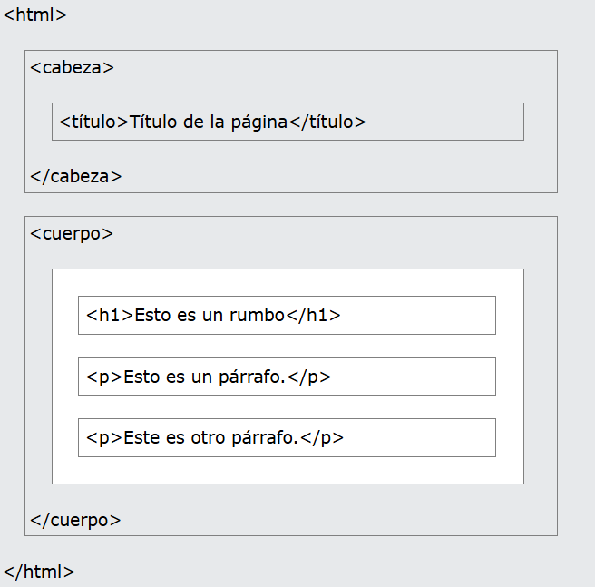

Editores HTML
Un simple editor de texto es todo lo que necesitas para aprender HTML.
Aprende HTML usando el Bloc de notas o TextEdit
Las páginas web se pueden crear y modificar mediante el uso de editores HTML profesionales. Sin embargo, para aprender HTML recomendamos un editor de texto simple como el Bloc de notas (PC) o TextEdit (Mac). Creemos que usar un editor de texto simple es una buena manera de aprender HTML. Siga los pasos a continuación para crear su primera página web con el Bloc de notas o TextEdit.
Paso 1: Abre el Bloc de notas (PC)
Windows 8 o posterior:
Abra la pantalla de inicio (el símbolo de la ventana en la parte inferior izquierda de la pantalla). Escriba Bloc de notas.
Windows 7 o anterior:
Abra Inicio > Programas > Accesorios > Bloc de notas
Paso 1: Abre TextEdit (Mac)
Abra el Finder > Aplicaciones > TextEdit
También cambie algunas preferencias para que la aplicación Guarde los archivos correctamente. En Preferencias > Formato > elija "Texto sin formato" Luego, en "Abrir y guardar", marque la casilla que dice "Mostrar archivos HTML como código HTML en lugar de texto formateado".
A continuación, abra un nuevo documento para colocar el código.
Paso 2: Escribe algo de HTML
Paso 3: Guardar la página HTML
Guarde el archivo en su computadora. Seleccione Archivo > Guardar como en el menú del Bloc de notas. Asigne al archivo el nombre "index.htm" y establezca la codificación en UTF-8 (que es la codificación preferida para los archivos HTML).
Propina: Puede usar .htm o .html como extensión de archivo. No hay diferencia; Depende de ti.